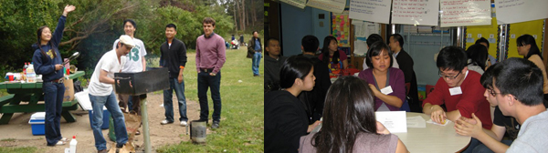

HOME
ABOUT
EVENTS
GALLERY
BULLETIN BOARD
GET INVOLVED
CONTACT US

- Check out our 2011 Summer Banquet!
- Gregory Pence '06 is in Korea on a Fulbright studying protest art, and is accepting donations for his project on the works of former North Korean propagandist artist Song Byeok who now does satire art on Kim Jong-il in South Korea. Check out his website.
- Tomoko Ogura '04 organized Fashion Girls For Japan and raised over $270,000. Check out her work.
- Dartmouth's Relief Efforts for Japan: How you can help.